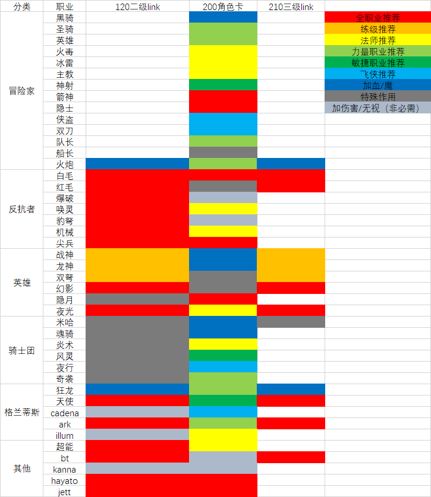
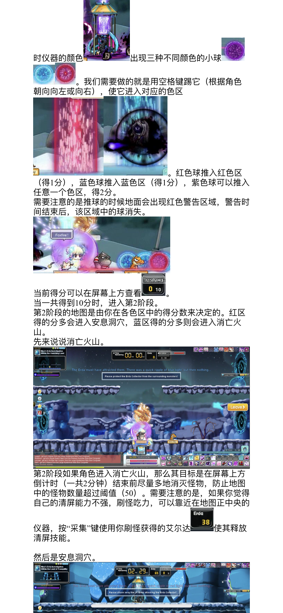
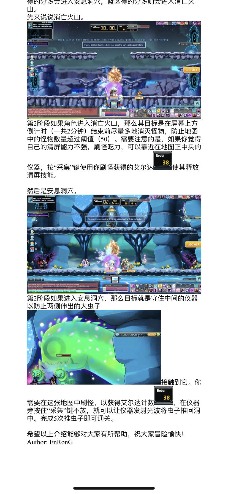

GMSR—从出生到入土
GMSR Weibo 《从出生到入土的GMSR攻略》
《从出生到入土的GMSR攻略》·出生篇
《从出生到入土的GMSR攻略》·入土篇
游戏下载及Discord相关
VPS
Discord
NX launcher更新游戏过慢的解决方法
通过Steam下载，先加速器加速steam再开启steam，然后账户明细改地区到美国，然后按WIN+R,输入steam://install/216150 开始下载有速度后，把设置下载地区改到靠近你的城市.之后断开加速器，下载完后把文件覆盖到原来的那边等verify完毕就可以玩了
Maplestory游戏机制
基础知识
各等级影响怪物meso掉落比率

各等级影响怪物经验获得比率

历届dmt

职业相关
职业名称翻译

林之灵/幻獸師/beast tamer 加点发方案推荐
- bt存在bug可能可以吃到4系的被动效果。 举例来说：
林之灵无论加不加豹子技能，打BOSS时候显示的单排和BA并没有差异，
但加豹子的林之灵实际给BOSS造成的伤害，会比没加豹子的林之灵高得多，但猫和鹰好像不明显。 - bt常态20%真减伤，无敌技能的cd很短
- Mana Overload对熊形态平A加成很大
- 33k bt居然道场49层……感觉受到了莫大的伤害
- 参考视频
当前版本职业选择推荐
工具及计算器
其他工具
经验计算公式

积分计算器 reward point optimizer
放大镜程序
- 程序链接
- 推荐一个放大镜程序，该程序可将您想要放大的屏幕放大和缩小到所需的大小并在所需的区域显示它。可以多次执行多个放大镜屏幕，并无缝传输原始屏幕。（免费版几分钟会断一次）（软件全韩文，靠google翻译网页和youtube字幕翻译勉强用）
装备强化计算器
- 最新版的MapleStory Calculators，包含新的link的计算
- 上星消耗meso计算器 Star Force expected cost calculator
- adventure更新后，上星计算器 200级装备计算疑似有误
- cubing & WSE & SF 计算器
进阶知识
大佬总结攻略
攻略链接
- 各方面提升面板的方式
- 最完整攻略 Credit to 光头
- 最大爆伤提升指南
- 阿黛尔攻略
游戏各阶段的目标（Milestone Progression for Reboot）
主号练级/刷钱/Node
升级与NODE
各阶段等级需要经验总量及对应怪物只数

Kanna刷钱及挂鬼
kanna revamp review_GMS
两种独立Kanna挂鬼神方式
- 压spanish/sticky key 打拳+鬼神，需要手动离开墙角
- spanish/sticky key 打拳+瞬移，需要手动放鬼 不怕卡角落
鬼神改版后刷图手法
其他farm
7个最佳卖水晶配比(日boss)
收入一共4700万
- h狮子
- n阿卡
- n品客斌
- n麦
- hard森兰丸
- chaos黑龙
- n闹钟
挖矿地图推荐地点
- Korean Folk Town: Goblin House
- Kerning Tower 2F Cafe<4>
- Inside the Mothership : Corridor 202 203 204
- Longest Ride on ByeByeStation
- 2岛以后的热门刷钱地图
装备选择及强化
装备选择
Arcane Umbra 对比 AbsoLab 真四火花修正版

装备获取
首饰制作10级到Meister所需要的材料&疲劳值

除统治者吊坠外的托德材料

familiar（怪怪卡）的合成培养
背景介绍
总结攻略
装备上星、火花及潜能
每星所加属性

Link & legion
小号培养
1-200练级地点推荐

120-190 全星图练等推荐地点
170-180骑士团怪物数量少，平台间隔大，建议去外星人普通图打
link及legion选择
- Legion枫叶联合系统(改版角色卡)资讯简介
- 美服攻略（模块分类）3.0.1
- 简明legion BT加点
- Jett link技能介绍， 包含如何洗， 转动的规律等
- Legion & Link列表 (已更新Zero和Adele，按优先级排序)
link与角色卡推荐内容

Boss及副本攻略
公会
公会战
公会副本


Boss
Boss机制
威尔技能与机制全讲解
CPAP(C闹钟)
真希拉
Boss前置
Boss前置及掉落物

副本
日常副本
航海
航海最大金币获取方法

神秘河(岛球)日常
二岛菜谱

一岛新组队任务



AB周常
- 韩版黑暗天堂每周任务
- 机械坟墓周常不推荐任务

跑旗
跑旗4am PST | 7am EST 小技巧
- 最好有防滑鞋，边缘起跳，下凹三角形过左边缘瞬间起跳，上凸三角形过最高点后起跳
- 右上角跳到booster上后不要按任何方向键，按住跳不放，即可弹射2连跳到左边大炮后的平台
- 第二圈开始右下角的阶梯处，可以左跳到平台上接S技能，起跳在空中按S 和 ↑ 即可通过传送口到上方平台
- 如果有D技能，则可在左中上booster处，加速的瞬间按D，即可冲过
起源塔
其他副本
结婚小镇
Phantom Forest wanted daily(银币)
- Caught in the Storm—– Corrupted Stormcaster（推荐）
- The Lost Shadow—- Corrupted Shadowknight (推荐）
- Blind Flame—- Corrupted Flamekeeper
- Broken Arrow—- Corrupted Windreaver
- A Sword of Heartbreak—- Corrupted Master
- Dust to Dust—- Elderwraith
- Ashes to Ashes—- Krakian Spirit
- Logging Work—- Phantom Tree
活动副本
解救拟真机器人攻略(Wondroid)
其他
GMSR氪金之路
造型
NX充值美国地区免税邮编
由于NX10.1号开始收税 充值会比较坑 以下几个是美国地区的免税邮编：（第一个亲测有效 后面两个还没试过）
- 91344
- 90077
- 97217
游戏周边
鸣谢
感谢以下GMSR Weibo DC成员编写、搜寻攻略
- 噜噜
- 阿亮
- 好奇
- 土鸡
- 雪姨
- Toki
- Steven
- FST
- 好奇
- Kat
- 大T
- imp
- 阿茶
- 祸忌
- Will
- 橙子
- 浩浩
- 海啸
- 蛋挞